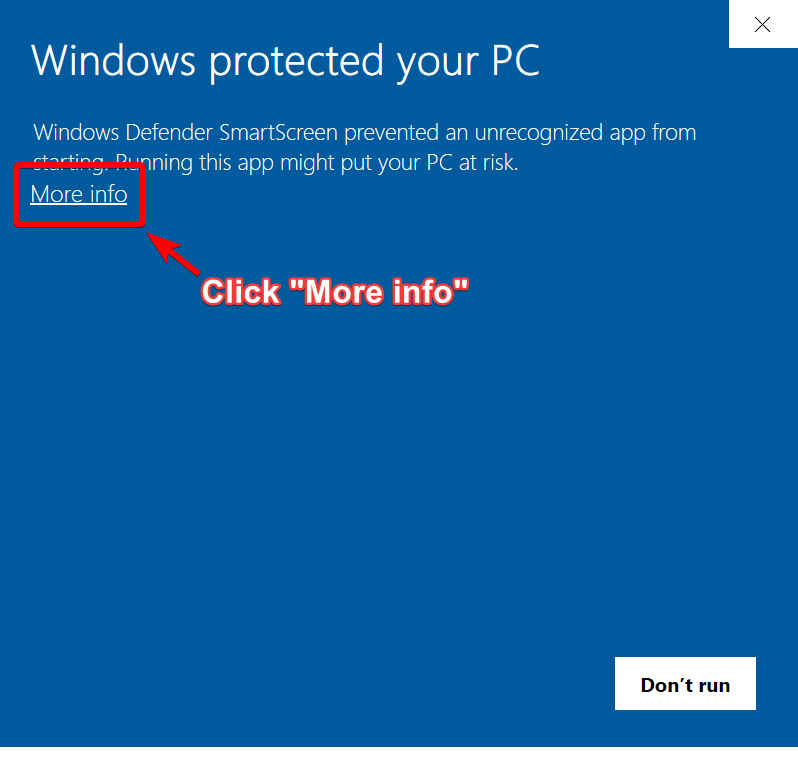
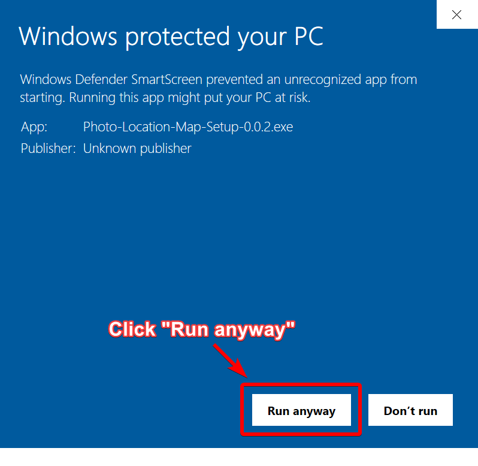

1. Double-click the downloaded exe file.
2. Windows Defender SmartScreen popup will appear. Click "More info".

3. Click "Run anyway".

4. The installer of Photo Location Map will launch. Follow the instructions on the installer.